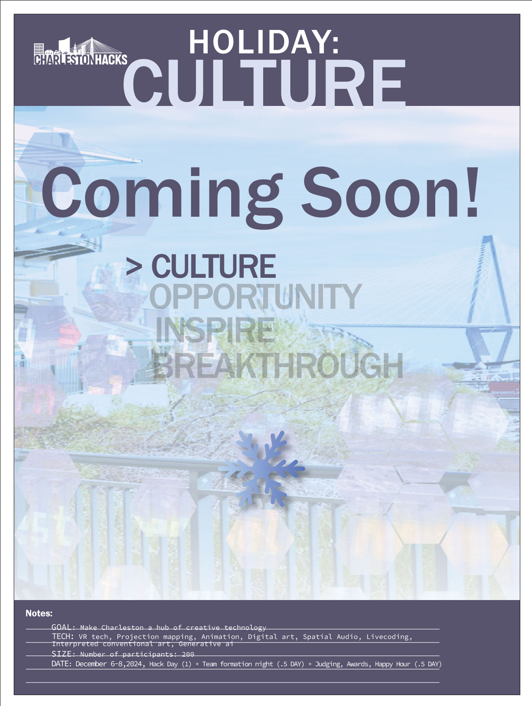
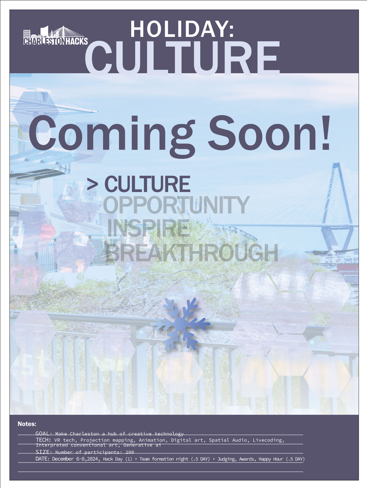

Create our culture
Culture - the theme of our hackathon, the "legacy" of our creativity shaping how we see the world. How will your digital creativity resonate with others? Work with a team to make work that changes the way we view the world and illuminates our culture beyond culture (24)
Your idea - What are you about creatively? Is it interpreting your static work into something more kinetic and immersive? How can your work convey your message in its highest form with a giant digital space as your output device. Work on something personal and make us believe in it, and in you and your team.
Culture - the focus of our hackathon, the creative legacy shaping how we see the world. How will your digital creativity resonate with others? Work with a team to make work that changes the way we view the world and illuminates our culture beyond the event.
Your idea - What are you about creatively? Is it interpreting your work into something more kinetic and immersive? How can your work convey your message in its highest form with a giant digital space as your output device? Work on something personal and make us believe in it, and in you and your team.